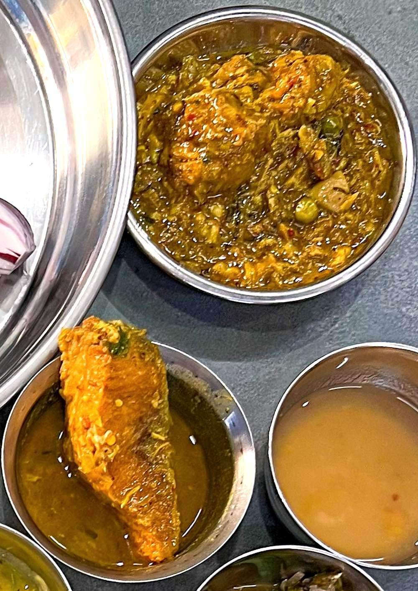

Nga Thongba
Manipuri fish curry, thin and ginger-sharp, built on a small hit of fermented fish

Contains: fish, mustard
Ingredients
Quantities for 4.
- 600g firm freshwater fish, cut into 3cm pieces Fish
- 20g Dried Fishthe nearest catalogued thing to ngari, the Manipuri fermented fish this dish is built on; toast it hard and use it sparingly. It is saltier and less funky than the real thing
- 3 tbsp Mustard Oil
- 1 medium, finely sliced Onion
- 6 cloves, crushed Garlic
- 1 tbsp, cut into fine matchsticks Ginger
- 1 tsp Turmeric
- 4, slit Green Chillithe local umorok is far hotter and has no catalogue id; add a pinch of chilli powder if you want closer to the real heat
- 2, chopped Tomato
- 3, chopped Spring Onion
- 700ml Water
- to taste Salt
- 3 tbsp, chopped Coriander Leavesoptional
Cookware
stovetop
Checked against the ingredient list for ten allergens: milk, egg, fish, crustaceans, tree nuts, peanuts, sesame, mustard, soy and gluten. Brands vary, so read the label on anything new to you.
Before you start
- Toast the dried fish before anything else and keep it aside. Done in the curry pan it makes everything taste of it.
- Rub the fish with a little turmeric and salt while you chop, so it firms up.
- Manipuri curries carry very little oil and no thickener. Resist the urge to reduce this into a gravy.
Method
- Dry-toast the dried fish in a small pan over low heat for 3 minutes, until it is brittle and smells strongly nutty. Crumble it and set it aside.Toasting takes the raw edge off. Untoasted, it dominates everything.
- Rub the fish pieces with 1/2 tsp of the turmeric and 1 tsp salt and leave them while you prepare the rest.
- Heat the mustard oil until it smokes, rest it off the heat 30 seconds, then fry the fish 90 seconds a side just to set the surface. Lift it out.
- In the same oil cook the onion 4 minutes until translucent, then add the garlic and half the ginger for 1 minute.
- Add the tomato and the remaining 1/2 tsp turmeric and cook 4 minutes, pressing the tomato until it breaks down.
- Stir in the crumbled toasted fish and cook 1 minute. The smell should turn savoury rather than sharp.
- Pour in the water, bring to a boil and simmer 8 minutes uncovered so it stays thin but tastes concentrated.
- Slide the fish back in with the green chillies and the rest of the ginger. Simmer 5 minutes without stirring, tilting the pan instead.Salt only now. The dried fish has already brought a lot of it.
- Off the heat, scatter the spring onion and coriander and stand 3 minutes before serving with rice.
Safe temperatures: Fish is done at 63°C / 145°F, or when it turns opaque and flakes easily. Reheat leftovers to 74°C / 165°F. FoodSafety.gov
Storage
Keeps 2 days refrigerated. Reheat gently in a wide pan, never at a rolling boil. The broth stays good even when the fish has softened, so leftovers are best spooned over rice.
Nutrition Good estimate
High protein: 35 g a serving, 46% of the calories
| Per serving422 g | Per 100 g | |
|---|---|---|
| Calories | 307 kcal | 73 kcal |
| Protein | 35.4 g | 8 g |
| Carbohydrate | 9.3 g | 2 g |
| of which sugars | 3.5 g | 1 g |
| Fibre | 2.2 g | 0 g |
| Fat | 13.9 g | 3 g |
| of which saturated | 1.8 g | 0 g |
| of which unsaturated | 10.5 g | 2 g |
Estimated from raw ingredients using USDA FoodData Central.
More like this: Healthy Indian recipes · Gluten-free Indian recipes · Dairy-free Indian recipes · Northeast Indian recipes
Times, yields, allergens and nutrition are guidance. Use your own judgement on doneness and on storing. More in About.